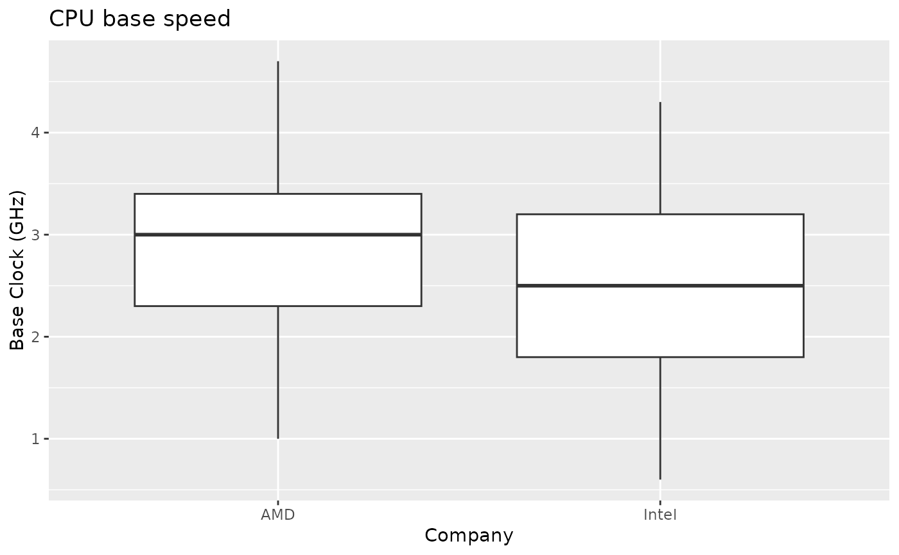
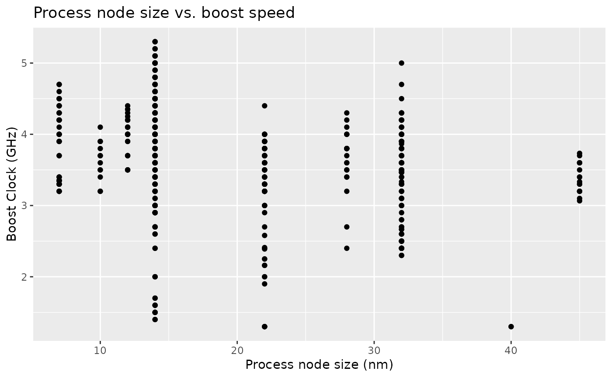

Data on computer processors released between 2010 and 2020.
cpu
A data frame with 875 rows and 12 variables.
Manufacturer of the CPU.
Model name of the processor.
Name given by manufacturer to all chips with this architecture.
Number of compute cores per processor.
The number of threads represents the number of simultaneous calculations that can be ongoing in the processor.
Base speed for the CPU in GHz.
Single-core max speed for the CPU in GHz.
Specifies the type of connection to the motherboard.
Size of the process node used in production in nm.
Size of the level 3 cache on the processor in MB.
Total draw power of the processor.
Date which the processor was released to the public.
boxplot(base_clock~company, data = cpu, main="CPU Base Speed", xlab = "Company", ylab = "Base Clock (GHz)")plot(cpu$process, cpu$boost_clock, main="Process Node Size V Boost Speed", xlab = "Process node size (nm)", ylab = "Boost Clock (GHz)")